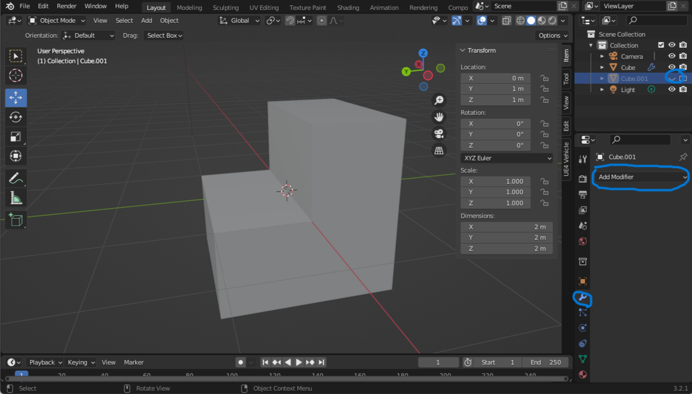
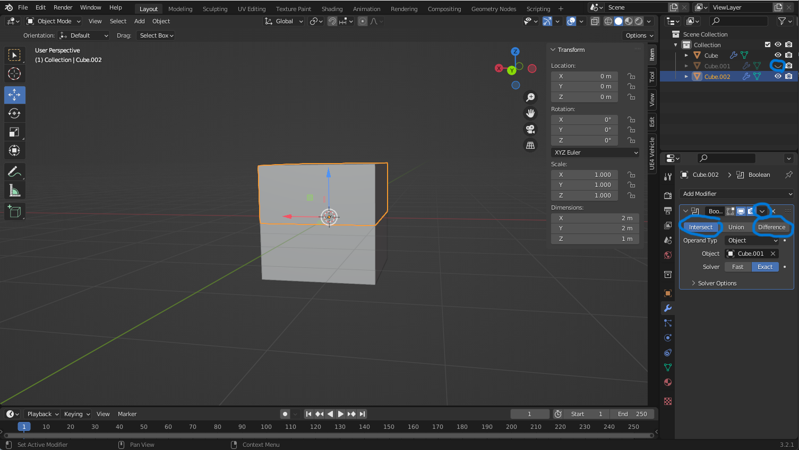

Substraktive Box
- Auf die Box ,von der substrahiert werden soll, drücken
- Auf den Schraubenschlüssel gehen(rechts unten)

- Modifier hinzufügen
- Boolean auswählen
- Modus "Difference
- Auf die kleine Pipette neben objekt drücken damit dann auf die Box mit der man substrahieren
will drücken
- Mit "H" oder oben rechts die Substraktive Box ausblenden
Objekt halbieren
- Box Kopieren und an gleiche stelle einfügen
- Eine Box erstellen die die hälfte abdeckt
- Eine Box zu einer Substraktieven Box machen
- Andere Box zu einer Intersect Box machen
- Booleans(Substraktieve und Intersect) zuweisen

- Substrektieve Box ausblenden